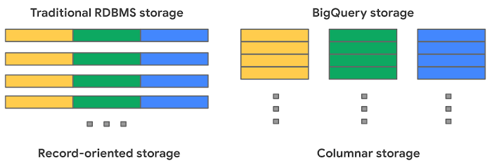

Cloud data warehouses¶
What is a cloud data warehouse?¶
Cloud data warehouses (CDWs) are databases which are hosted in the cloud, and are typically optimized around analytical queries like aggregations and window functions, rather than the typical transactional queries that might support a traditional application. Examples of popular cloud data warehouses include Google BigQuery, Amazon Redshift, and Snowflake.
Cloud data warehouses typically have a few advantages over traditional transactional databases for analytical workflows, including:
- They are usually managed services, meaning you don't have to provision and maintain servers.
- They can scale to truly massive data.
By having a solid understanding of how cloud data warehouses work, you can construct fast, efficient queries and avoid surprise costs.
Usage-based pricing¶
With most on-premise transactional warehouses, costs scale with the number of server instances you buy and run. These servers usually are always-on and power various applications with high availability. In a traditional transactional warehouse both compute power and storage are associated with the same logical machine.
Cloud data warehouses typically have a different pricing model: they decouple storage and compute and charge based on your query usage. Google BigQuery charges based on the amount of data your queries scan. Snowflake charges based on the amount of compute resources needed to execute your queries. There are also costs associated with data storage, but those are usually small compared to compute. Though these two models are slightly different, they both lead to a similar take-home lesson: by being careful with how data are laid out and accessed, you can significantly reduce both execution time and cost for your cloud data warehouses.
Data layout¶
Most cloud data warehouses use columnar storage for their data. This means that data for each column of a table are stored sequentially in object storage (this is in contrast to transactional databases which usually store each row, or record, sequentially in storage). This BigQuery blog post goes into a bit more detail.

There are a number of consequences of using columnar storage:
- You can read in columns separately from each other. So if your query only needs to look at one column of a several-hundred column table, it can do that without incurring the cost of loading and processing all of the other columns.
- Because the values in a column are located near each other in device storage, it is much faster to read them all at once for analytical queries like aggregations or window functions. In row-based storage, there is much more jumping around to different parts of memory.
- Having values of the same data type stored sequentially allows for much more efficient serialization and compression of the data at rest.
In addition to columnar storage, cloud data warehouses also usually divide tables row-wise into chunks called partitions. Different warehouses choose different sizing strategies for partitions, but they are typically from a few to a few hundred megabytes. Having separate logical partitions in a table allows the compute resources to process the partitions independently of each other in parallel. This massively parallel processing capability is a large part of what makes cloud data warehouses scalable. When designing your tables, you can often set partitioning strategies or clustering keys for the table. This tells the cloud data warehouse to store rows with similar values for those keys within the same partitions. A well-partitioned table can enable queries to only read from the partitions that it needs, and ignore the rest.
Constructing queries for cloud data warehouses¶
With the above understanding of how cloud data warehouses store and process data, we can write down a set of recommendations for how to construct efficient queries for large tables stored within them:
- Only SELECT the columns you need. Columnar storage allows you to ignore the columns you don't need, and avoid the cost of reading it in. SELECT * can get expensive!
- If the table has a natural ordering, consider setting a partitioning or clustering key. For example, if the data in the table consists of events with an associated timestamp, you might want to partition according to that timestamp. Then events with similar times would be stored near each other in the same or adjacent partitions, and queries selecting for a particular date range would have to scan fewer partitions.
- If the table has a partitioning or clustering key already set, try to filter based on that in your queries. This can greatly reduce the amount of data you need to scan.
- Filter early in complex queries, rather than at the end. If you have complex, multi-stage queries, filtering down to the subset of interest at the outset can avoid the need to process unnecessary data and then throw it away later in the query.
Note
For people coming from transactional databases, the considerations about partitioning and clustering may seem reminiscent of indexes. Cloud data warehouses usually don't have traditional indexes, but partitioning and clustering keys fill approximately the same role, tailored to the distributed compute model.
Primary keys and constraints¶
A central feature of cloud data warehouses is that storage is separate from compute, and data can be processed in parallel by distributed compute resources. The less communication that needs to happen between these distributed compute resources, the faster they can work. For this reason, most cloud data warehouses do not support primary keys, foreign keys, or other constraints.
For example: if we have a foreign key constraint set on a table and insert a new record, we would have to scan every single row of the parent table to see if the referenced row exists and is unique. If the table is large and partitioned, this could mean spinning up a large amount of compute resources, just to insert a single row. So rather than supporting constraints with horrible performance characteristics, cloud data warehouses just don't do it. This can be surprising to some people, since they often still include the syntax for constraints for SQL standard compatibility (see the Snowflake docs on constraints).
Note
One exception to the above is NOT NULL constraints,
which can be done cheaply since they don't require information from other tables or partitions to be enforced.
Interactive Exercise¶
This exercise is intended to be done live with collaborators. It should read fine, but will be more impactful if we set up a lab setting! We'll be querying Google Analytics 4 data stored in BigQuery. The dataset in question consists of (at the time of this writing) about six months of user event data collected from websites under ca.gov domain. It has over 500 million events in about 400 gigabytes of storage. The table is partitioned by event date, so all events on the same day get put in the same partition.
Initial query¶
Suppose we want to analyze the breakdown of the different web browsers used to access state sites so we can understand which browsers are the highest priority to support. We expect this to be a moving target as different browsers become more or less popular, so we'll try to restrict our analysis to the month of January, 2023. Fortunately, the dataset has a timestamp column, so we can try to filter based on that column:
SELECT * from `analytics_staging.base_ga4__events`
WHERE event_timestamp >= unix_seconds(TIMESTAMP '2023-01-01')
AND event_timestamp <= unix_seconds(TIMESTAMP '2023-01-31')
Yikes! This query scans the whole 400 GB dataset. Based on Google's approximately $5/TB charge, this costs about $2, and if it were a query we were running many times a day, it could easily start costing thousands of dollars per year.
Take advantage of column pruning¶
You'll note that we are doing a SELECT * query, but if we're interested in browser usage, we really only need that column. So let's just SELECT that column:
SELECT device_browser from `analytics_staging.base_ga4__events`
WHERE event_timestamp >= unix_seconds(TIMESTAMP '2023-01-01')
AND event_timestamp <= unix_seconds(TIMESTAMP '2023-01-31')
By just selecting the column we wanted, we avoided loading a lot of unnecessary data, and now we are only scanning ~4 GB of data, reducing the charge by 99%!
Take advantage of partition pruning¶
In the above query we are filtering based on the event_timestamp field. However, the dataset actually has two different time-like fields, and it is partitioned based on the other one! The query planner is not smart enough to know that both fields contain similar information, and it is therefore not able to infer that we don't need to scan every partition to get the data within the January time window. Let's fix that by re-working the query to use the partitioned-by DATE field:
SELECT device_browser from `analytics_staging.base_ga4__events`
WHERE event_date_dt >= '2023-01-01'
AND event_date_dt <= '2023-01-31'
By using the field by which the table is partitioned in our filter, we reduced the data scanned by another factor of ~5 (as discussed above, this is analogous to using an index).